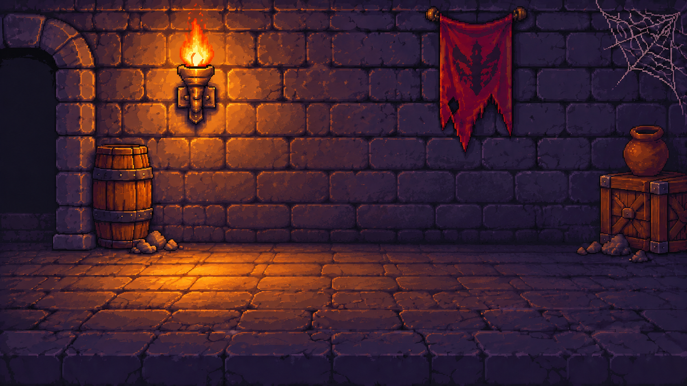

каменные катакомбы · этаж 1
Ходи — стрелки, WASD или кнопки на экране
Поговори — подойди к кошечке у стены
Берегись — шипы в центре зала
Жди — кнопка «ЖДАТЬ» или пробел
Исследуй пока пустой квадратный зал.
